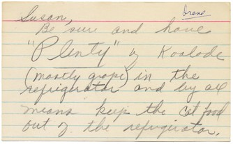

Kristen Kreider
Collection
(for S.)
I.
Collection. A collection of things. Things collected together. Some? Things. Some things collected together. Something’s collected together. Something’s collected together in a group. (In a place.) Some things collected together in a group in a place. Something’s collected——
an accumulation. Like dust. Or dirt. Or (something’s collected out of place in a place) dreams.
Take mine.
*
When I was a child, I wanted to eat letters.
 (+ music box)
(+ music box)
 When I grew up, I wanted to choke.
When I grew up, I wanted to choke.
II.
(Begin again.)
Re-collection. A re-collection of things. Things collected together (again). Some? Things. Some things collected together (again). Something’s collected together again. Something’s collected together again in a group. (In a place.) Some things collected together in a group in a place in again. Something’s collected——a recollection. Like memory. Or reverie. Or (something’s remembered out of place in a place) grudge. Take hers.
*
‘Excuse me, but I couldn’t help noticing you from across the way … Those rags! That fur! May I take your photograph? Thanks. And now, just a few questions. So: [pause] What kind of things do you like to collect?’
(she says) (he says) |
A: A: |
memories small phallic objects for my imaginary city |
III.
Are words? Things. Are words? Collected together. Some things collected together in a group? (In a place.) Something’s collected together in a group. (In a place.) In an order. In a syntax. Like speech is a collection of sounds. (What order is the matter in?) Like language is a collection of words. (What matters is in the order.) Like: box. grid. folder. folio. shelf. cabinet. book. file. stack. head. bag. pile. archive. day. moment.
 Please take just a moment to collect your thoughts …
Please take just a moment to collect your thoughts …
Take his. (Desire.) And today’s new word is syllable.
IV.
Con-nec-tion. A connection of things. Things connected together. Some? Things. Things? Ones. Some ones connected together. Someone’s connected together. Someone’s connected together in a group. (In a place.) Some ones connected together in a group in a place. Someone’s connected——an identification. Like logic. Mine? Hers. Or (someone’s connected out of place in a place) theirs. Take this.

(There’s a story in there somewhere. Is it mine? Hers? I watch her in the dark. In a frame. As he would. Steady hand. Through a lens. Does he love her? Will he leave her? As she smiles. Removes her glasses. Puts them on. Does he love her? I see myself. Same eyes. Does he love me? Will he leave me? Through his eyes. Dry eyes. He won’t eats onions and he never cries.)
V.
Collection. Re-collection. Memories. Dreams. Words. Image. Eyes, through the eyes. Her eyes. His eyes. My eyes. Dry eyes. (He won’t eat onions and he never cries.)
I sit in the dark and wait …
I sit in the dark and wait …
I sit in the dark and wait to see for a moment through his eyes in her eyes. To see for a moment from her eyes to his eye. To see for a moment the camera linger. To see for a moment the gaze caress. To see for a moment if I see through his eyes if I see in her eyes a reflection of -- what? A reflection of I don’t know what. A reflection of connection or a once-was connection of a time and a place and a memory and a dream and an image of connection or a once-was connection. A collection of connections of a once-was dream.
(2.04)